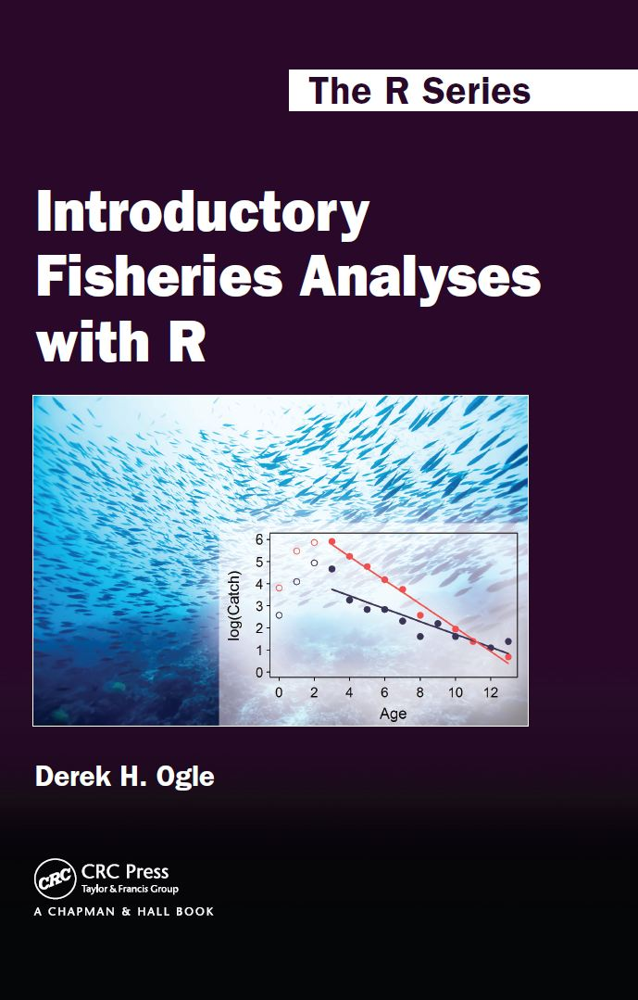

 Introductory Fisheries Analyses with R by Derek H. Ogle provides detailed instructions on how to perform basic fisheries stock assessment analyses in the R environment. The analyses covered are typical analyses for many working fisheries scientists and, thus, also occur in most upper-level undergraduate and graduate level fisheries science, analysis, or management courses. The book begins with three foundational chapters that help the reader become familiar with R within the context of basic fisheries analyses and examples. The remaining chapters build upon these foundational skills with analytical techniques specific to fisheries stock assessments. Available from Routledge.
The book is dedicated to my three professional mentors.
Table of Contents (with Resources)
- (Very Brief) Introduction to R Basics
- The bare fundamentals of R that are required for the remainder of the book.
- R Script
- Loading Data and Basic Manipulations
- Load data into R from external files and perform typical manipulations including filtering, sorting, aggregating, joining, and converting between wide- and long-formats.
- R Script and Data: BGHRfish.csv, BGHRsample.csv, inchAge.csv, inchBio.csv, inchBio07.csv, inchBio08.csv, inchGear.csv
- Supplements: Backcalculation of Previous Length
- Exercises
- Plotting Fundamentals
- The bare fundamentals for constructing basic plots using base R.
- R Script
- Supplements: Common Axis Labels on a Grid of Subplots, Complex Grid Layouts
- Exercises
- Age Comparisons
- Compare two or more estimates of age for the same fish with precision and bias metrics and plots.
- R Script and Data: ShadCR.csv
- Exercises
- Age-Length Keys
- Assign ages to unaged fish from their length and an age-length-key.
- R Script and Data: CreekChub.csv, SiscowetMI2004.csv
- Exercises
- Size Structure
- Assess size structure through length frequencies and the proportional size distribution (PSD) metric.
- R Script and Data: InchLake1113.csv
- Exercises
- Weight-Length Relationships
- Introduction to simple linear regression through examination of weight-length relationships.
- R Script and Data: RuffeSLRH.csv
- Supplements: DVR with More than Two Groups
- Exercises
- Condition
- Compute condition metrics from observed length and weights. Introduction to one-way ANOVA.
- R Script and Data: RuffeSLRH.csv
- Exercises
- Abundance from Capture-Recapture Data
- Estimate abundance from capture-recapture data for closed (single and multiple recapture events) and open populations.
- R Script and Data: CutthroatAL.csv, Zehfussetal_1985_mod.INP
- Exercises
- Abundance from Depletion Data
- Mortality Rates
- Estimate total mortality rates from catch curve and capture-recapture data. Estimate fishing and natural mortality with empirical models.
- R Script and Data: CCatfishNB.csv, CutthroatAL.csv
- Exercises
- Individual Growth
- Estimate parameters for the von Bertalanffy growth function and compare growth parameters among populations.
- R Script and Data: BlackDrum2001.csv
- Supplements: Other VBGF Parameterizations, Other Growth Functions, Other Nonlinear Regression Algorithms
- Exercises
- Recruitment
- Estimate parameters for the Beverton-Holt and Ricker stock-recruitment models, compute spawning potential ratios, and estimate year-class strengths from catch data.
- R Script and Data: PSalmonAK.csv, SturgeonGB.csv, WalleyeWad.csv, WalleyeWyrlng.csv
- Supplements: Maturity Schedules
- Exercises
Errata
An errata and post-production notes are maintained here.